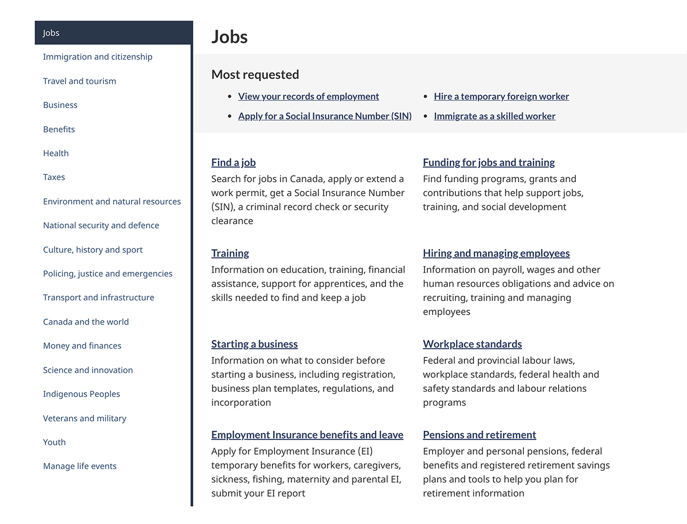
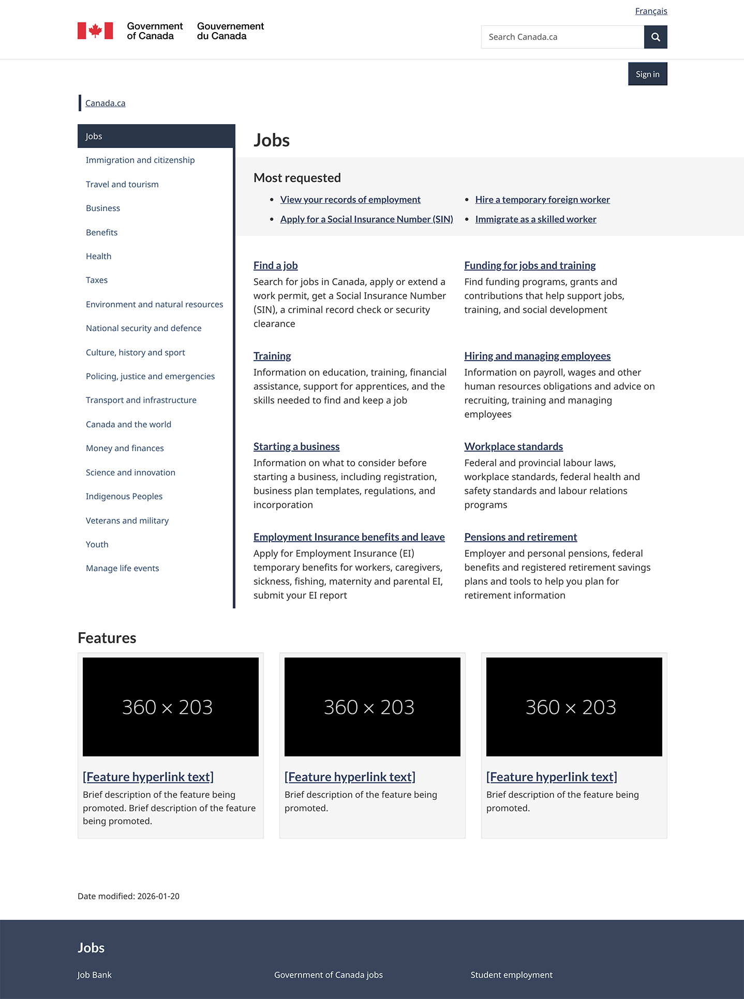

Layered theme page: Canada.ca design
Mandatory
Last updated 2026-02-27
The layered theme page works as a series of pages performing the role of the primary navigation on Canada.ca. Theme pages provide access to topics and destination pages that support task completion. This allows users to navigate government-wide content through one of the main themes rather than by institutions. These pages also prioritize content and navigation by presenting the most visited information and services first.

On this page
When to use
The layered theme template can only be used for theme pages. Only theme leads can use this template.
What to avoid
Do not use the left-hand navigation pattern from this template on any other page type. This is for use on layered theme pages only.
Do not put any links to social media channels. Instead, put these on topic pages.
Content and design
The theme title must be a unique H1 and the first component on the page.
Include the Most requested band below the theme title to feature top tasks. Use the Most requested band pattern.
Add a link and brief description, also called doormats, for each theme-specific topic included on the page. Don’t repeat any of the links from the Most requested band. Use the 2 column variation of the Services and information pattern.
Include a contextual band in your footer. Use the Contextual band pattern.
The sign in button is included by default and will link to the general sign in page. You can customize the link and button name to go to a specific sign in page or a page managing multiple accounts for your theme. Multiple account pages should be labeled “CRA sign in” or “IRCC sign in”, otherwise be specific to the account such as “Sign in to [account name]”. See the Contextual Sign in button pattern.
You can include alerts when there is an urgent service disruption. Alert appears below the h1 inside the content of the right side. See the guidance for using alerts during a crisis.
You can include up to three context-specific features above the footer. See the Context-specific features pattern.
You can include a featured link when there is a need for a significant and temporary feature. See the Featured link pattern.
Customization requests will be considered on a case-by-case basis if your theme has the ability to research and monitor the impact of the customization. Please contact the Canada.ca Experience Office with any requests to deviate from the established template:
Visual examples

Image description: layered theme page navigation - large screen
The layered theme page navigation consists of a left hand navigation including all the themes, and the content of the selected theme appears on the right. The theme “Jobs” is selected and is highlighted in dark blue. A thick dark blue bar visually separates the navigation from the content.
The active theme content includes the theme heading, most requested items in a band, which is then followed by links and descriptions in two columns to navigate further into the theme. Below the theme navigation section is the heading “Features” and three theme context-specific features and a contextual footer for the theme’s contact information.

Image description: layered theme page navigation - small screen
In mobile the layered theme page navigation is a dark blue band that runs across the top with the text “Menu” and a chevron pointing down. When the user clicks the menu expands to expose all the themes.
The active theme content includes the theme heading, most requested items in a band, which is then followed by links and descriptions in two columns to navigate further into the theme. Below the theme navigation section is the heading “Features” and three theme context-specific features and a contextual footer for the theme’s contact information.
How to implement
Find working examples and code for implementing the layered theme page.
GCweb (WET) theme implementation reference
The implementation reference includes how to configure the layered theme page.
Research and rationale
Consult research findings and policy rationale.
Research findings
Wayfinding on Canada.ca research summary
Research showing that people navigating on the site use breadcrumb links nearly twice as often as they use the Theme and topic menu.
Policy rationale
The layered theme page is a mandatory template under the Canada.ca Specifications.
Latest changes
-
Stabilized and launched the layered theme page.
-
Updated the pattern to remove any reference of topic pages. Topic pages are now a separate pattern.
-
- Changes to doormat columns in tablet view
- Clarify social media account guidance
-
A new beta version of this template was added.
Page details
- Date modified: